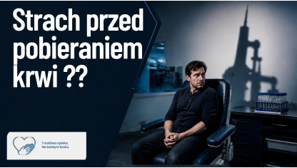

Wyniki badań
Co oznaczają i jak je czytać?
Diagnosta z wieloletnim stażem
Pracuję w laboratorium i wiem, że dla wielu z Was
wyniki badań to po prostu… skróty, liczby i mnóstwo niewiadomych.
Ten profil ma pomagać Ci dobrze zrozumieć badania,
a nie zastępować konsultację z lekarzem.

Co oznaczają i jak je czytać?
Ma wielkie znaczenie!.
krok po kroku.
Bo z tym pracuję na codzień.

Myślisz, że jesień to tylko Pumpkin Spice Latte, koc i seriale? To również idealny moment na badania laboratoryjne. Zobacz, jakie badania warto wykonać jesienią i dlaczego kilka minut w punkcie pobrań może przynieść więcej korzyści niż kolejna filiżanka kawy.

Dowiedz się, skąd bierze się lęk przed badaniem, jak zmniejszyć stres i dlaczego regularne badania krwi są tak ważne dla zdrowia.
Nie każde badanie wykonane od razu po ukąszeniu kleszcza da miarodajny rezultat. Dowiedz się, kiedy najlepiej rozpocząć diagnostykę boreliozy i jakie objawy powinny wzbudzić Twoją czujność.

Aenean ornare velit lacus, ac varius enim lorem ullamcorper dolore. Proin aliquam facilisis ante interdum. Sed nulla amet lorem feugiat tempus aliquam.

Aenean ornare velit lacus, ac varius enim lorem ullamcorper dolore. Proin aliquam facilisis ante interdum. Sed nulla amet lorem feugiat tempus aliquam.

Aenean ornare velit lacus, ac varius enim lorem ullamcorper dolore. Proin aliquam facilisis ante interdum. Sed nulla amet lorem feugiat tempus aliquam.

Aenean ornare velit lacus, ac varius enim lorem ullamcorper dolore. Proin aliquam facilisis ante interdum. Sed nulla amet lorem feugiat tempus aliquam.
Aenean ornare velit lacus, ac varius enim lorem ullamcorper dolore. Proin aliquam facilisis ante interdum. Sed nulla amet lorem feugiat tempus aliquam.
Aenean ornare velit lacus, ac varius enim lorem ullamcorper dolore. Proin aliquam facilisis ante interdum. Sed nulla amet lorem feugiat tempus aliquam.